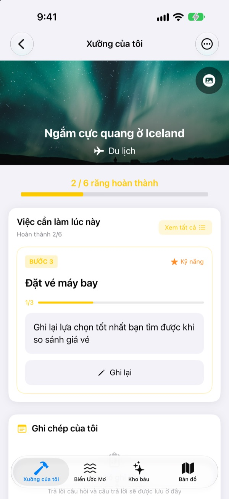
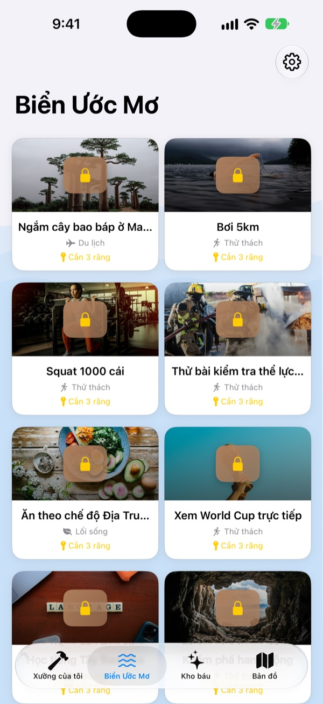
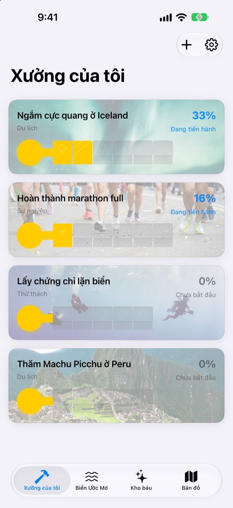
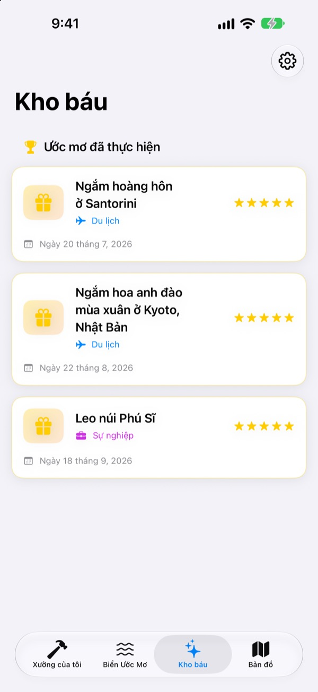

Đừng chỉ viết
ước mơ ra giấy
Chọn một ước mơ, những bước nhỏ đưa bạn đến đó sẽ thành răng của chiếc chìa khóa. Trả lời bước của hôm nay, từng câu một, rồi chẳng mấy chốc hộp ước mơ sẽ mở ra.
Mua một lần là dùng mọi tính năng. Không gói đăng ký, không quảng cáo.

Thử hoàn thành chìa khóa
Ước mơ ngắm cực quang ở Iceland chỉ còn hai bước. Trả lời mỗi câu hỏi một dòng (để trống cũng được) rồi chạm Tiếp theo. Mỗi bước xong sẽ lấp một răng, đủ răng là mở được hộp.
Bạn từng viết danh sách ước mơ rồi quên mất?
“Ngắm cực quang” lớn đến mức không biết bắt đầu từ đâu, thế là nằm yên trong danh sách nhiều năm. Dream Seeker chia ước mơ ấy thành những bước làm được ngay hôm nay, như tìm hiểu mùa, để dành tiền, đặt vé máy bay, và chỉ cho bạn thấy đúng một bước cần làm lúc này.
Chọn trong hơn 590 ước mơ
Du lịch, trải nghiệm, thành tựu, sức khỏe, học tập và các mối quan hệ. Ước mơ của sáu lĩnh vực nằm trong những chiếc hộp trôi trên Biển Ước Mơ. Mang hộp bạn thích về xưởng của tôi, các bước đã được chia sẵn.
Không thấy ước mơ của mình? Tự tạo với tiêu đề, lĩnh vực và các bước cần làm.

Từng răng một, vừa đủ cho hôm nay
Trong Xưởng của tôi, bạn thấy ngay chìa khóa của từng ước mơ đã xong đến đâu. Bước cần làm nằm trên cùng, trả lời các câu hỏi đã chuẩn bị là lấp được một răng.
Câu trả lời và ảnh được lưu trong Ghi chép của tôi, và bạn có thể nhìn lại cả chặng đường trong Dòng thời gian tiến trình.

Ước mơ đã thành vào Kho báu, nơi muốn đến lên bản đồ
Lấp đủ răng rồi mở hộp. Ước mơ đã thành được cất vào Kho báu kèm ngày tháng, còn ước mơ tạm dừng cũng chờ ở đó để bạn bắt đầu lại bất cứ lúc nào.
Ước mơ có địa điểm sẽ hiện trên bản đồ, để bạn thấy hết những nơi muốn đến.

Bắt đầu chỉ với ba bước
- 1
Chọn ước mơ
Chạm một chiếc hộp trên Biển Ước Mơ và chọn Mang về xưởng của tôi.
- 2
Trả lời bước hôm nay
Lần lượt trả lời câu hỏi của bước trên cùng để lấp một răng.
- 3
Mở hộp
Khi đủ răng, chìa khóa hoàn thành và hộp ước mơ mở ra.
Sáu lĩnh vực trên Biển Ước Mơ
- Du lịch
- Ngắm cực quang ở Iceland · Ngắm hoàng hôn ở Santorini
- Trải nghiệm
- Trải nghiệm nhảy dù · Trải nghiệm dù lượn
- Thành tựu
- Hoàn thành marathon full · Trekking đến trại căn cứ Everest
- Sức khỏe
- Hít xà 20 cái · Có cơ bụng sáu múi
- Học hỏi
- Nói tiếng Anh trôi chảy · Nói tiếng Pháp trôi chảy
- Mối quan hệ
- Du lịch vòng quanh thế giới cùng bố mẹ · Sống một tháng ở đảo Jeju cùng bạn bè
Mỗi lĩnh vực có gần một trăm ước mơ. Tạo ước mơ của riêng bạn bằng Thêm ước mơ mới trong Xưởng của tôi.
Mua một lần, có tất cả
Ứng dụng
- Hơn 590 ước mơ với câu hỏi cho từng bước
- Ước mơ của riêng bạn
- Ghi chép của tôi kèm ảnh và Dòng thời gian tiến trình
- Kho báu và bản đồ
- Chế độ Vun ước mơ
- Các bản cập nhật sau này
Ủng hộ nhà phát triển (tùy chọn)
- Nếu thấy hữu ích, bạn có thể gửi một khoản tip nhỏ trong Cài đặt
- Tip không mở khóa gì cả. Không gửi thì mọi tính năng vẫn như cũ
Tip trả từng lần, không phải gói đăng ký.
Trong ứng dụng không có gì phải trả thêm. Không tài khoản, không quảng cáo.
Câu hỏi thường gặp
Bắt đầu thế nào?
Ở thẻ Biển Ước Mơ, chạm vào chiếc hộp bạn thích rồi chọn Mang về xưởng của tôi. Trong Xưởng của tôi, trả lời câu hỏi của bước hiện tại, các răng sẽ lần lượt được lấp. Đủ răng là mở được hộp.
Tôi có thể thêm ước mơ của riêng mình không?
Có. Trong Xưởng của tôi, chạm Thêm ước mơ mới rồi nhập tiêu đề, lĩnh vực và các bước để đạt được.
Làm sao tạm dừng hoặc bắt đầu lại một ước mơ?
Trong menu của ước mơ đang thực hiện, chọn Từ bỏ ước mơ này, ước mơ sẽ chuyển sang Ước mơ tạm dừng trong Kho báu. Ở đó, chạm Bắt đầu lại để đưa về Xưởng của tôi, hoặc Xóa hẳn để xóa.
Chế độ Vun ước mơ là gì?
Đó là màn hình quản lý ước mơ theo kiểu leo núi. Bật hoặc tắt trong Cài đặt > Cài đặt hiển thị. Bạn có thể đặt hạn chót cho từng bước và quản lý trở ngại như chi phí, thời gian giống một dự án.
Ảnh không hiện.
Một số ảnh nền của ước mơ được tải từ Internet. Hãy kiểm tra kết nối mạng. Khi không có mạng, ứng dụng hiện hình mặc định.
Tôi có chuyển ghi chép sang iPhone mới được không?
Ghi chép chỉ lưu trên thiết bị này, không có tài khoản hay đồng bộ. Khi khôi phục iPhone mới từ bản sao lưu iCloud hoặc máy tính, ghi chép sẽ được chuyển cùng dữ liệu các ứng dụng khác.
Trong ứng dụng có gì phải trả thêm không?
Không. Có ứng dụng là dùng được mọi tính năng. Tip trong Cài đặt chỉ là tùy chọn khi bạn muốn nói lời cảm ơn.
Ước mơ và ghi chép của tôi có bị gửi đi đâu không?
Không. Không có tài khoản, không quảng cáo, không công cụ phân tích. Ước mơ, ghi chép và ảnh của bạn chỉ nằm trên thiết bị.
Liên hệ bằng cách nào?
Báo lỗi, góp ý tính năng hay bất cứ điều gì, cứ gửi cho chúng tôi qua Gửi góp ý trong Cài đặt của ứng dụng, hoặc nhắn tin Instagram (@lee25_ios).
Có câu hỏi hoặc gặp sự cố, hãy gửi về leeo@kakao.com.